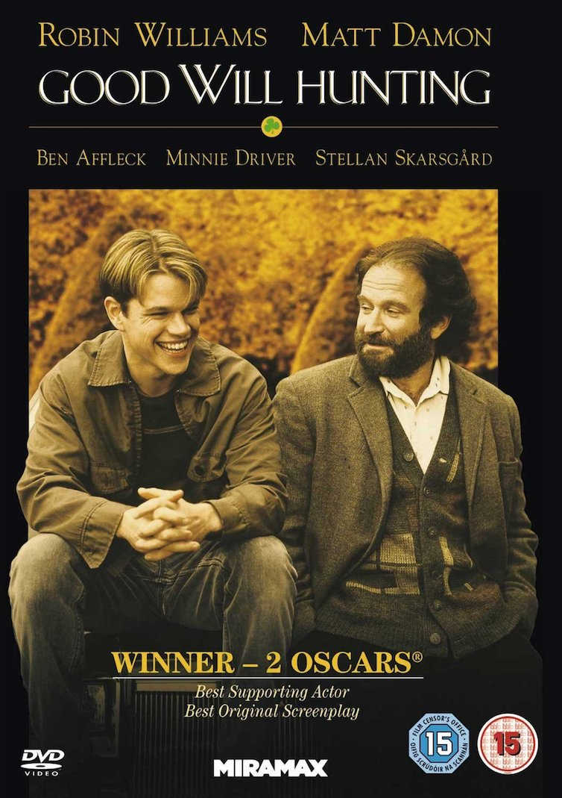
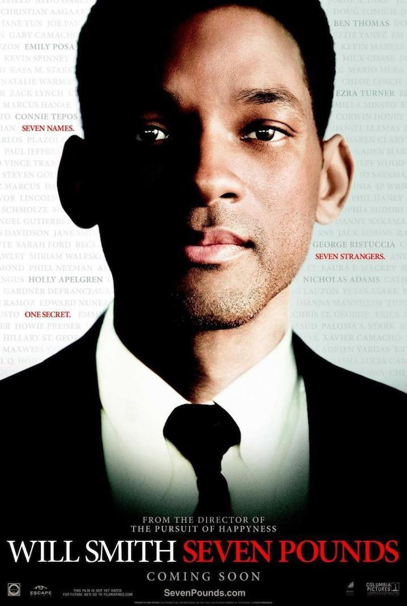
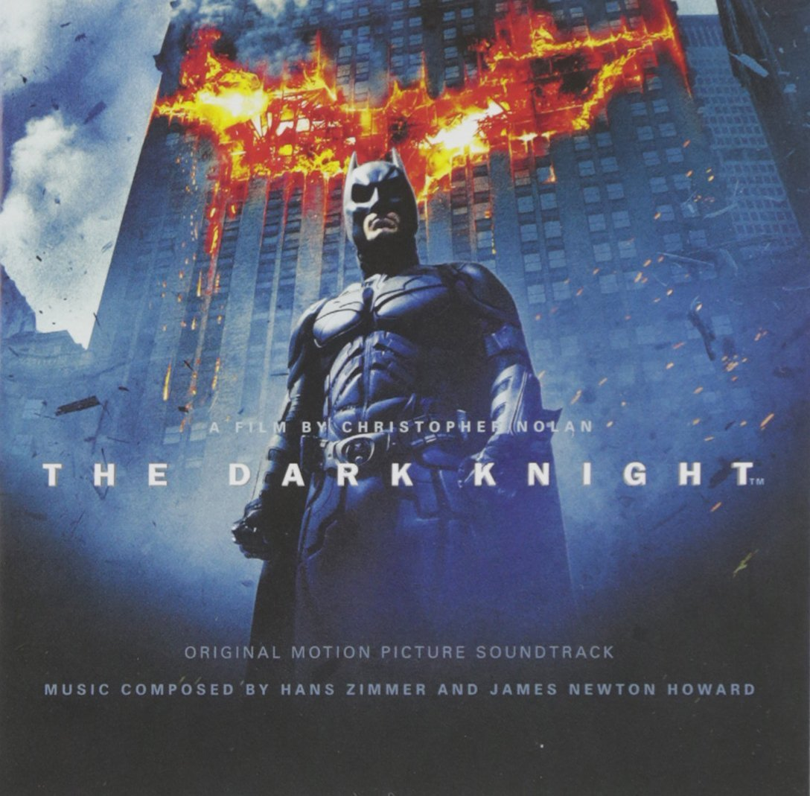

I am a young Belgian learning to code @LeWagon Brussels. I am passionate about cars and I hope to end working within its luxury segment (supercars). Having a mix with event organization would be awesome!
|  | 1997 - Good Will HuntingGood Will Hunting is a 1997 American drama film, directed by Gus Van Sant, and starring Robin Williams, Matt Damon, Ben Affleck, Minnie Driver and Stellan Skarsgård. Written by Affleck and Damon (and with Damon in the title role), the film follows 20-year-old South Boston laborer Will Hunting, an unrecognized genius who, as part of a deferred prosecution agreement after assaulting a police officer, becomes a client of a therapist and studies advanced mathematics with a renowned professor. |
|  | 2008 - Seven PoundsSeven Pounds is a 2008 American drama film, directed by Gabriele Muccino, in which Will Smith stars as a man who sets out to change the lives of seven people. Rosario Dawson, Woody Harrelson, and Barry Pepper also star. |
|  | 2008 - The Dark KnightThe Dark Knight is a 2008 superhero film directed, produced, and co-written by Christopher Nolan. Featuring the DC Comics character Batman, the film is the second part of Nolan's The Dark Knight Trilogy and a sequel to 2005's Batman Begins, starring an ensemble cast including Christian Bale, Michael Caine, Heath Ledger, Gary Oldman, Aaron Eckhart, Maggie Gyllenhaal and Morgan Freeman. |
This has been coded during the morning lecture on the 28th of February @LeWagon Brussels